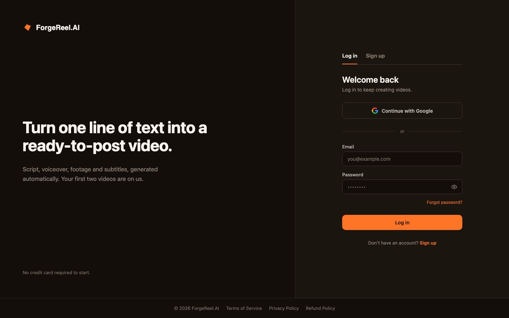
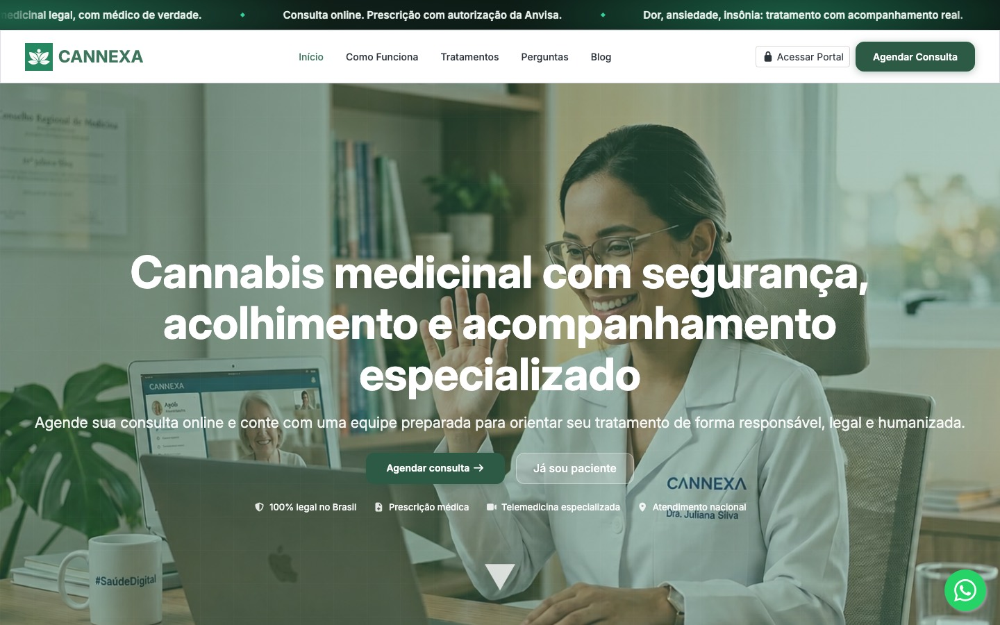
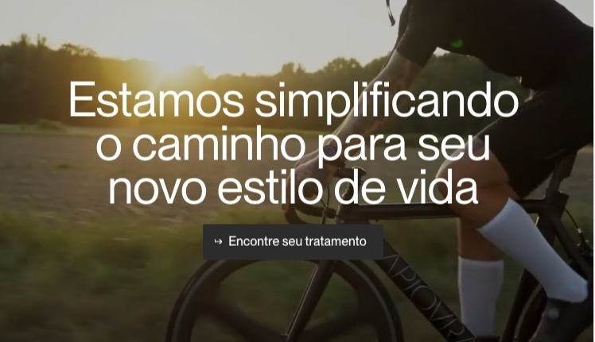
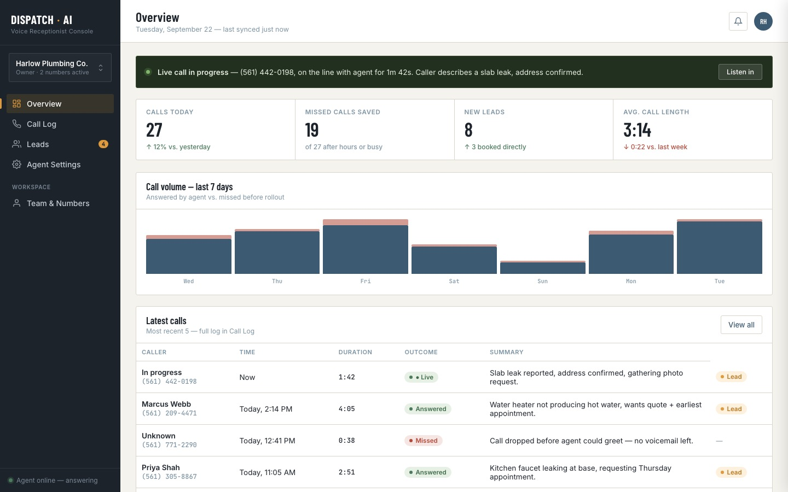

AI & automation
LLM-powered features, document and intake processing, and workflow automation that plugs into the systems you already run.
Riosyn designs and engineers AI automation, telehealth platforms and custom web and mobile apps — from first sketch to production, with one small team the whole way.
LLM-powered features, document and intake processing, and workflow automation that plugs into the systems you already run.
Practice management, virtual visits, scheduling and patient messaging — designed with privacy and security requirements in mind from day one.
Custom products from MVP to scale — clean interfaces, reliable backends and cloud infrastructure your team can own after launch.
“We stay small on purpose, so the people who scope your project are the people who build it.”

Turns one line of text into a ready-to-post video — script, voiceover, footage, and subtitles generated automatically.

Medicinal-cannabis care online across Brazil — scheduling, teleconsultations, prescriptions, and portals for patients, physicians, and partners.

Fully online weight care — intake, review by a licensed physician, prescription, and medication delivered to the patient’s door.

An AI phone receptionist for home-service businesses that answers calls, captures leads, and keeps customers in one workspace.
We map your users, workflows and constraints, then agree on what success looks like.
Clickable prototypes and a technical plan you can react to before a line of production code.
Short cycles with working software every sprint, so you see progress, not status reports.
We ship, monitor and keep improving — or hand over cleanly to your in-house team.
A short call is enough to know if we’re a fit. You’ll get an honest take either way.
Book a call or write to contact@riosyn.com